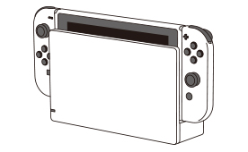

使用上のご注意
安全のために、次の内容を守ってご使用ください。
危険
次のことにご注意ください。火災や感電、失明、けが、家財や機器の破損の原因になります。
充電には、Nintendo Switch ACアダプター [HAC-002(JPN)] またはUSB充電ケーブル [HAC-010] を使用する
Joy-ConにJoy-Con拡張バッテリー（乾電池式）を取り付けると、単3形アルカリ乾電池でも充電できます。
バッテリーや乾電池を使用する機器、ACアダプターは次のことをしない
- 分解、改造
- 加熱、乾燥（電子レンジや高圧容器、ドライヤーなどの使用）
- 高温になる場所での使用や設置、保管（ストーブやヒーターなどの熱を発生する機器の近くや、直射日光のあたる場所、夏の車内など）
- 端子部と金属類の接触
- 電池から漏れた液への接触
- 水濡れ、水没
- 強い衝撃や無理な力を加える
- 強く曲げる（ケーブル類をきつく巻きつける）
- 変形、損傷
- 引っ張る
バッテリーや乾電池が液漏れしたり、機器が水没したりした場合は、すぐに使用を中止する
バッテリーや乾電池から漏れた液には触らず、
https://support.nintendo.com/jp/repair/ の「オンライン修理受付」から点検を依頼してください。万一、液が目に入った場合は、すぐに多量の水で洗い流し、ただちに医師の診察を受けてください。
液が手や体に付いたときは、水でよく洗い流してください。
警告
次のことにご注意ください。火災や感電、けが、家財や機器の破損の原因になります。
家庭用電源や指定された乾電池以外で使用しない
ACアダプターはAC100～240Vに対応しています。
乾電池を使用する場合は、次のことに注意する
- 新しい乾電池と古い乾電池を混ぜない
- 種類やメーカーの異なる乾電池を混ぜない
- 指定以外の乾電池や、改造された乾電池を使わない
- 変形したり、表面のラベルに傷が付いたりしている乾電池を使わない
- プラス（＋）やマイナス（－）端子と金属類を接触させない
- 乾電池を充電しない
歩行中や運転中に使用しない
運転中の使用は法令により処罰の対象になります。
次の場所での使用や設置、保管はしない
- 不安定な場所
- 小さなお子様やペットが近づける場所
- ホコリや油煙の多い場所
- 湿気や水気のある場所（浴室など）
- 熱のこもる場所、高温になる場所（ストーブやヒーターなど熱を発生する機器の近くや、直射日光の当たる場所、夏の車内など）
濡らしたり、液体や異物を入れたり、油分などで汚れた手で触ったりしない
万一、液体や異物が入った場合は、すぐに使用を中止して https://support.nintendo.com/jp/repair/ の「オンライン修理受付」から点検を依頼してください。
雷が鳴り始めたら、コンセントに差し込んでいる機器（ACアダプターなど）や、そこに接続している機器には触らない
落雷による感電のおそれがあります。
誤飲防止のため、ゲームカードやmicroSDカードを小さなお子様の手の届く場所に置かない
本体や周辺機器を、植込み型医療機器に近づけない
本体や周辺機器（コントローラーを含む）には、無線通信機能を内蔵しています。植込み型医療機器（心臓ペースメーカーなど）からは15cm以上離してください。そのほかの医療機器を使用している方は、事前に医師に相談してください。
航空機内や病院など、無線通信が禁止・制限されている場所では無線通信を行わない
機器やケーブル類は、次のような取り扱いをしない
- 分解、改造
- 加熱、乾燥（電子レンジや高圧容器、ドライヤーなどの使用）
- 端子部と金属類の接触
- 強い衝撃や無理な力を加える
- 強く曲げる
- ケーブル類をきつく巻きつけたり、引っ張ったりする
破損や変形したものは使用せず、破損や変形した部分に触ったり、自分で直したりしない
本体やコントローラーなどを振ったり動かしたりして遊ぶ場合は、周囲の状況に注意する
本体の吸気口や排気口をふさいだり、充電しながら長時間使用したりしない
製品表面の温度が高くなる場合があります。温度の高い部分に長時間肌が直接触れていると、低温やけどの原因になりますのでご注意ください。
ホコリなどがたまらないよう、定期的に掃除する
本体の吸気口/排気口、機器の端子部やプラグに異物やホコリが付着している場合は、掃除機などで取り除いてください。
注意
次のことにご注意ください。けがや故障、誤動作の原因になります。
Joy-Conを使用する場合は、次のことに注意する
- 本体 [HEG-001] / [HAC-001] やJoy-Conグリップなどに取り付けるときは、Joy-Conの向きに注意して、カチッと音がするまでスライドさせて固定する
- Joy-ConハンドルにJoy-Conを取り付けるときは、＋または－の位置を合わせたあと、Joy-Conのレール側から入れてしっかりと押し込む
- Joy-Conを取り外すときは、裏側の取り外しボタンを押しながらスライドさせる
- 縦持ち、または2本持ちで操作するときは、Joy-Conストラップを取り付けてロックしたあと、ストッパーを締めてストラップが手首から抜けないことを確認してから、しっかりと持つ
Joy-Con拡張バッテリーを使用する場合は、次のことに注意する
- Joy-Conや電池カバーが正しく取り付けられていることを確認する
- 振ったり動かしたりして遊ぶ場合は、ストラップが手首から抜けないようにストッパーを締めて、しっかりと持つ
ファミリーコンピュータ コントローラーを充電する場合は、次のことに注意する
- 本体 [HEG-001] / [HAC-001] またはJoy-Con充電スタンド(2way) [HAC-048] に取り付けるときは、コントローラーの向きに注意して、カチッと音がするまでスライドさせて固定する
- 本体 [HAC-001] に取り付けた状態で、ドック [HEG-007] に差し込まない
本体 [HEG-001] の画面に貼ってある飛散防止フィルムは剥がさない
有機ELディスプレイが破損したときに破片が飛散するのを防ぐためのフィルムを貼っています。そのままお使いください。
対応した製品以外を使用しない
- 使用中のソフトに対応していない製品
- 任天堂が使用を推奨していない製品
使用上のお願い
次のことにご注意ください。機器の破損や故障の原因になります。
データの読み書き中に電源をOFFにしたり、ゲームカードやmicroSDカード、周辺機器を抜き差ししたりしない
データが破損/消失した場合、データの復元はできません。ご了承ください。
バッテリーを内蔵した機器は、半年に一度は充電する
長期間使用しないと、充電できなくなることがあります。
急激な温度変化が起こる場所に置かない
結露が起きた場合は、電源がOFFの状態で、水滴が乾くまで暖かい部屋に置いてください。
画面の焼き付きに注意する
本体 [HEG-001] の画面内の同じ位置に変化（動き）のない映像を長時間表示し続けると、焼き付きの原因になります。焼き付きを防ぐには、以下のことをお守りください。
- 変化（動き）のない映像を長時間または繰り返し表示しない
- 自動スリープの時間を短めに設定する
- 画面の輝度を上げすぎない
清掃時は次のことに注意する
- 本体をお手入れする際は、電源をOFFにし、接続しているケーブルなどを取り外してください。
- 汚れた場合は、水で濡らしてから固く絞った柔らかいきれいな布で軽くふいてください。
- 手指で触る部分を消毒したい場合は、市販の消毒薬（エタノールの濃度が70％程度のもの）を柔らかいきれいな布に少量含ませて、軽くふいてください。
- 高濃度の消毒液やそのほかの溶剤（シンナー、ベンジンなど）を使ったり、製品内に水分を入れたりしないでください。
- 清掃後、製品が完全に乾いていることを確認してから使用してください。
タッチスクリーンを傷付けない
タッチスクリーンに汚れや異物が付いた場合は、柔らかい布でホコリやゴミを払い落としてから、きれいにふき取ってください。
タッチペンを使用する場合は次のことに注意する
- 本体のタッチスクリーンの操作以外には使用しないでください。
- ペン先以外でタッチスクリーンを突いたりこすったりしないでください。
- ペン先をつまんだり引っ張ったりしないでください。
- ペン先部分が破損したり、タッチペンが正常に反応しなくなったりした場合は使用を中止してください。
- 保護シートを貼っているタッチスクリーンでは、タッチペンが正常に反応しない場合があります。
Nintendo Switchドックは図のように立てて使用する

※Nintendo Switch Lite本体 [HDH-001] をドックに差し込むことはできません。
廃棄する場合は、各自治体の指示に従う
小さなお子様が誤って飲み込まないよう、梱包用の袋や結束バンドなどはすぐに捨ててください。
お客様の個人情報の保護のため、本体を廃棄したり、ほかの人に譲渡したりする場合は、必ず本体の初期化を行ってください。
- microSDカードをお使いの方は、microSDカードを忘れずに抜いてください。
- バッテリー内蔵の機器は、電源が入らない状態になるまで放電してから廃棄してください。Joy-ConやNintendo Switch Proコントローラーなどのコントローラーは、本体から取り外した状態または有線接続していない状態で、ボタンを押してもプレイヤーランプが光らなくなるまで放電してから廃棄してください。
- Nintendo Switch Proコントローラーに内蔵されているバッテリーは、最寄りのリサイクル協力店へお持ちください。くわしくは、一般社団法人JBRCのホームページ（http://www.jbrc.com/）をご覧ください。